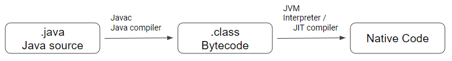

Java
업데이트:
Java
- 제임스 고슬링(James Gosling)과 다른 연구원들이 개발한 객체 지향적인 프로그래밍 언어이다.
Java의 특징
- 객체 지향 프로그래밍(Object-Oriented Programming) 언어1이다.
- JDK8 이후의 Lambda Expression은 함수형 프로그래밍2을 지원한다.
- 컴파일 언어인 동시에 인터프리터3 언어이다.
 - JVM에서 실행되므로 운영체제에 독립적이다.
- JVM을 사용하여 자동 메모리 관리(Garbage Collection)6가 된다.
- 동적 로딩을 지원한다.
- Load-Time dynamic loading : 클래스를 로딩하는 과정에서 클래스를 로딩한다.
public class RuntimeLoading { public static void main(String[] args) { System.out.println("Hello!"); } } - Run-Time dynamic loading : 코드를 실행하는 순간에 클래스를 로딩한다.
public enum Language { DEFAULT, KOREAN, ENGLISH; } public class KoreanGreeting implements Runnable { public void run() { System.out.println("안녕!"); } } public class EnglishGreeting implements Runnable { public void run() { System.out.println("Hello!"); } } public class Greeting { public void greeting(Language language) { try { Class<?> _class = this.getClass(language); Runnable runnable = (Runnable)_class.newInstance(); runnable.run(); } catch (InstantiationException | IllegalAccessException e) { e.printStackTrace(); } } private Class<?> getClass(Language language) { switch(language) { case KOREAN: return KoreanGreeting.class; default: return EnglishGreeting.class; } } } public class LoadTimeLoading { public static void main(String[] args) { Greeting greeting = new Greeting(); greeting.greeting(Language.DEFAULT); greeting.greeting(Language.KOREAN); } }
- Load-Time dynamic loading : 클래스를 로딩하는 과정에서 클래스를 로딩한다.
- 네트워크와 분산처리를 지원한다.
- 인터넷과 대규모 분산환경을 염두하여 다양한 네트워크 프로그래밍 라이브러리(Java API)를 통해 비교적 짧은 시간에 네트워킹 프로그래밍을 쉽게 개발할 수 있도록 지원한다.
Support
JAVA 제품군의 지원은 아래의 도표7를 보면 알 수 있다.
| Release | GA Date | Premier Support Until | Extended Support Until | Sustaining Support |
|---|---|---|---|---|
| 7 | July 2011 | July 2019 | July 2022***** | Indefinite |
| 8** | March 2014 | March 2022 | December 2030 | Indefinite |
| 9 (non‑LTS) | September 2017 | March 2018 | Not Available | Indefinite |
| 10 (non‑LTS) | March 2018 | September 2018 | Not Available | Indefinite |
| 11 (LTS) | September 2018 | September 2023 | September 2026 | Indefinite |
| 12 (non‑LTS) | March 2019 | September 2019 | Not Available | Indefinite |
| 13 (non‑LTS) | September 2019 | March 2020 | Not Available | Indefinite |
| 14 (non‑LTS) | March 2020*** | September 2020 | Not Available | Indefinite |
| 15 (non‑LTS) | September 2020*** | March 2021 | Not Available | Indefinite |
Reference
※ Sample Code는 여기에서 확인 가능합니다.